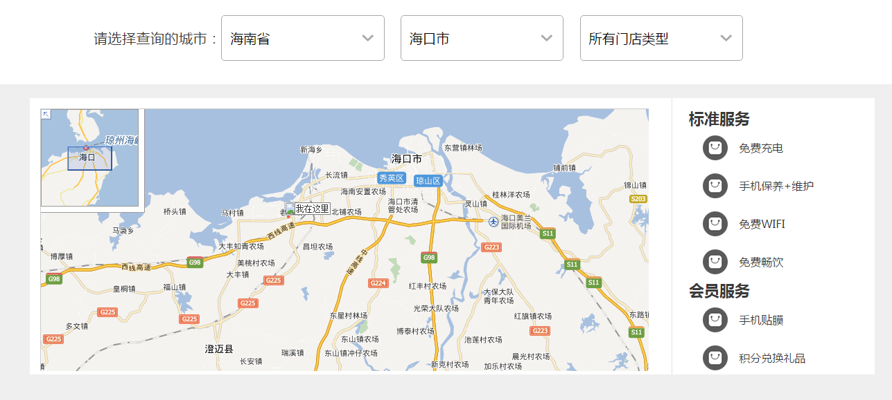
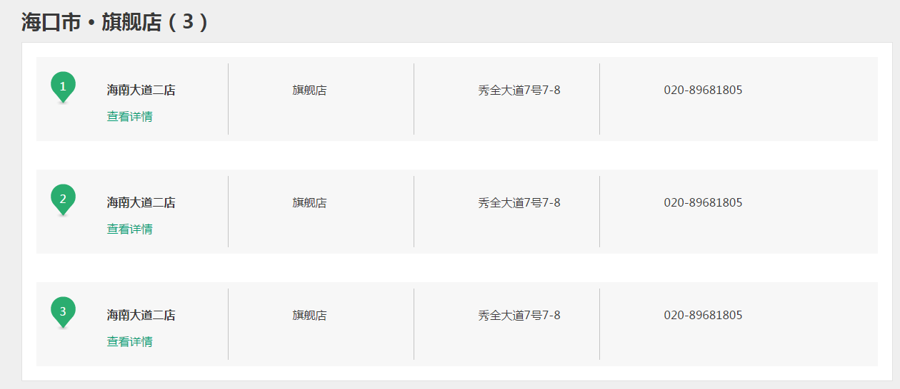

最新产品展示
首页使用大图banner轮播
OPPO系列展示
代表系列:
OPPO R9s、OPPO R9s Plus
OPPO R9s、OPPO R9s Plus是OPPO在2016年10月19日发布的智能手机，主打拍照，两款手机均采用OPPO与索尼联合开发的1600万像素IMX398传感器和F1.7超大光圈。双核对焦大光圈、随手一拍更清晰。另外OPPO R9s Plus还搭载了定制的OIS+光学防抖技术，保证运动状态或暗光环境下拍照时，有效克服因抖动而产生的画面模糊，成像更稳定。
OPPO R9、OPPO R9 Plus
2016年3月17日，OPPO正式发布了OPPO R9、OPPO R9 Plus两款产品，这次OPPO采用了全新的1600万像素臻美前置摄像头和美颜4.0功能，让自拍照美得很自然。
生于1981年8月15日，本名千成林，演员、MC
《Running Man》是韩国SBS电视台在《星期天真好》单元推出的大型户外竞技真人秀节目。节目七位固定主持是刘在石、金钟国、池石镇、河东勋（HAHA）、宋智孝、姜熙健（Gary）、李光洙，[1] 前固定主持宋仲基、朴秀英（Lizzy）因个人发展原因离开。
节目致力于打造一个不同于过去real variety的新型态娱乐节目。每期由7位固定成员及不同嘉宾参演，对应每期节目不同的主题，分为不同的队伍进行比赛，最后获胜一方将获得称号或奖品。游戏中创造的撕名牌等环节收获无数好评，也使得许多综艺节目竞相模仿。在全亚洲都有极高的人气。[2]
《Running Man》于2010年7月11日起每周日下午韩国时间16点50分（北京时间15点50分）在SBS电视台首播，每集约85分钟。[3]
完善的售前和售后功能
页面主要展示售后网点，预约，维修进度查询，真伪查询，手机升级，购买帮助服务政策，打假维权以及各区域体验店查询的入口，为提高用户体验，采用响应式布局以适应不同设备的用户需求。
服务页面中热点问题以及使用技巧展示，帮助用户快速找到相应问题的解决方式和熟悉操作使用，产品专区详细列出各机型在线说明书入口
体验店页面中用户可自定义查找各区域的门店类型
 